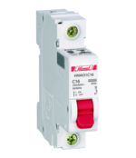
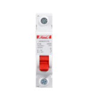
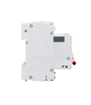
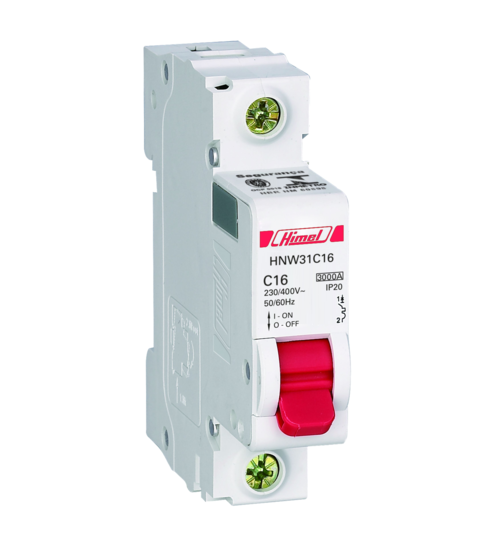

Os disjuntores termomagnéticos, também conhecidos como minidisjuntores, são equipamentos essenciais na proteção e controle de circuitos elétricos. Sua principal função é interromper automaticamente o fornecimento de energia quando ocorre uma sobrecarga ou curto-circuito, evitando danos aos fios e cabos. Além da atuação automática em situações de falha, eles também podem ser acionados manualmente para facilitar manutenções ou intervenções no sistema elétrico.